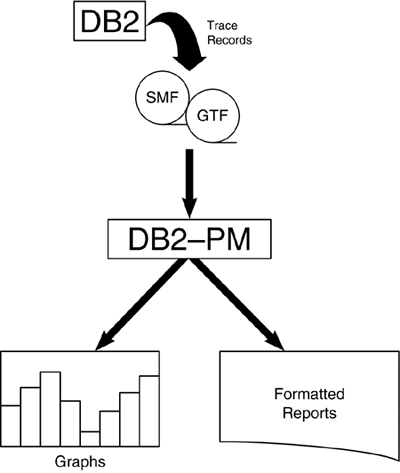

|
|
< Day Day Up > |
|
DB2 Performance Monitor (DB2 PM)IBM's DB2 PM is the most widely used batch performance monitor for DB2. Although DB2 PM also provides an online component, it is not as widely used (though it has beensignificantly improved since its initial release). I discuss the online portion of DB2 PM briefly in the next section. In this section, I concentrate solely on the batch performance monitoring characteristics of DB2 PM. Other DB2 performance monitoring solutions offer similar reports and information, so you should be able to translate this information for the particular product in use at your site. DB2 PM permits performance analysts to review formatted trace records to assist in evaluating the performance of not only the DB2 subsystem, but also DB2 applications (see Figure 24.1). As the DB2 subsystem executes, trace records are written to either GTF or SMF. Which trace records are written depends on which DB2 traces are active. The trace information is then funneled to DB2 PM, which creates requested reports and graphs. Figure 24.1. DB2 PM operation. DB2 PM can generate many categories of performance reports, known as report sets. A brief description of each report set follows: Many types and styles of reports can be generated within each set. The following sections describe each DB2 PM report set. Accounting Report SetThe DB2 PM accounting report set provides information on the performance of DB2 applications. Two basic layouts are provided for accounting reports: short and long. The accounting reports provide the following type of information about the performance of DB2 applications:
For an example of the type of information provided on a short accounting report, refer to the accounting report excerpt shown in Listing 24.1. This report provides a host of summarized performance data for each plan, broken down by DBRM. Listing 24.1. DB2 PM Accounting Report—Short
#OCCURS #ROLLBK SELECTS INSERTS UPDATES DELETES CLASS1 EL.TIME CLASS2
NOTE Please note that the DB2 PM report excerpts shown in this chapter might not look exactly like the reports that you will generate using DB2 PM. The listings in this chapter are excerpts and are shown to highlight the performance information that can be gleaned from each type of report. Each plan is reported in two rows. Refer to the first row of the report, the one for PRG00000. Two rows of numbers belong to this plan. The first row corresponds to the first row of the header. For example, this row shows 19 occurrences of this plan (#OCCUR), 0 rollback requests (#ROLLBK), 8.24 SELECTS, and 2.39 INSERTS. The second row corresponds to the second row of the report header. For example, it has no distributed requests, 27 COMMITS, and 2.35 FETCHES. The second component of this report details each of the packages and/or DBRMs for the plan. For each package or DBRM, DB2 PM reports the number of occurrences and SQL statements, along with elapsed, TCB, and suspension times and total number of suspensions. This information is provided only if Accounting Trace Classes 7 and 8 are specified. The report shown was generated by requesting DB2 PM to sort the output by PLANNAME only. The following sort options are available:
Likewise, you can combine these options together, such as PRIMAUTH-PLANNAME-REQLOC. This combination would cause a report to be generated containing a row for each unique combination of primary authorization ID, plan name, and requesting location. The short accounting report is useful for monitoring the overall performance of your DB2 applications. Using this report, you can perform the following functions:
At the end of the short accounting report, a synopsis of the plans on the report is presented. The plans are sorted in order by TCB time spent in DB2 and wait time spent in DB2. This synopsis is useful when you're analyzing which plan takes the longest time to execute. If the short accounting report signals that potential problems exist, a long accounting report can be requested. This report provides much more detail for each entry on the short accounting report. The long accounting report documents performance information in great depth and is one of the most useful tools for performance analysis. The long accounting report is composed of eight distinct sections:
You should use the long accounting report to further analyze the performance of particular plans. The detail on this report can appear intimidating at first, but reading it is simple after you get used to it. The first step after producing this report is to scan it quickly for obvious problems. In the following sections, you will examine each of the individual components of this report in more detail. Long Accounting Report: CPU and Elapsed TimeThe CPU and Elapsed Time portion of the long accounting report contains a breakdown of the amount of time the plan took to execute. Elapsed time, CPU time, I/O time, and locking time are displayed in great detail (see Listing 24.2). Listing 24.2. Accounting Report—Long (Part 1)PRIMAUTH: DBPCSM PLANNAME: PROG0049 AVERAGE APPL (CL.1) DB2 (CL.2) IFI (CL.5) CLASS 3 SUSPENSIONS AVERAGE TIME When you're analyzing this section, first compare the application times (Class 1) to the DB2 times (Class 2). If a huge discrepancy exists between these numbers, the problem may be outside the realm of DB2 (for example, VSAM opens and closes, application loops, or waiting for synchronous I/O). Also, keep in mind that the DB2 times do not include:
For IMS, CICS, and WebSphere transactions, compare the not-in DB2 time (class 1 minus class 2) against the time reported on your IMS, CICS, or WebSphere monitor report. Sometimes a performance culprit reveals itself by comparing the results of two different monitors (that is, DB2 versus IMS/CICS/WebSphere). Class 3 information reports wait time. Read and write suspensions are shown in the SYNCHRON. I/O, OTHER READ I/O, and WRITE I/O entries of this report. Of particular interest is the amount of time spent waiting for I/O. If the average SYNCHRON. I/O wait time is high, investigate the application for reasons that would cause additional reads, such as the following:
If no additional data is being read, investigate other reasons such as insufficient buffers, insufficient EDM pool storage, or disk contention. As a general rule of thumb, an asynchronous read (sequential prefetch or sequential detection) requires from 0.4 to 2 milliseconds per page. List prefetch reads range from 1 to 4 milliseconds. A synchronous write requires about 1 to 4 milliseconds per page. Turning your attention to locking, if LOCK/LATCH(DB2+IRLM) suspension time is higher than expected, review the lock detail shown in Part 4 of the long accounting report. Potential causes of such a problem include a new inefficient access path, unclustered data, or a system problem. The Long Accounting Report also breaks out time spent processing stored procedures, user-defined functions, and triggers. Long Accounting Report: HighlightsAfter you peruse the execution times, a quick analysis of the highlights portion of the report is useful. The highlights section is located just to the right of the section containing execution times. It contains some basic details about the nature of the application that will be useful for subsequent performance analysis (see Listing 24.3). Listing 24.3. Accounting Report—Long (Part 2)HIGHLIGHTS -------------------------- #OCCURENCES : 6 #ALLIEDS : 6 #ALLIEDS DISTRIB: 0 #DBATS : 0 #DBATS DISTRIB. : 0 #NO PROGRAM DATA: 6 #NORMAL TERMINAT: 6 #ABNORMAL TERMIN: 0 #CP/X PARALLEL. : 6 #IO PARALLELISM : 0 #INCREMENT. BIND: 0 #COMMITS : 12 #SVPT REQUESTS : 0 #SVPT RELEASE : 0 #SVPT ROLLBACKS : 0 MAX SQL CASC LVL: 0 UPDATE/COMMIT : N/C SYNCH I/O AVG : 0.005408 You should review the following highlight fields:
Long Accounting Report: SQL ActivityAn understanding of the type of SQL being issued by the application is essential during performance analysis. The long accounting report provides a comprehensive summary of the SQL issued, grouped into DML, DCL, and DDL sections (see Listing 24.4). Listing 24.4. Accounting Report—Long (Part 3)SQL DML AVERAGE TOTAL SQL DCL TOTAL SQL DDL CREATE DROP Scan the DML section of the report to verify the type of processing that is occurring. You can quickly uncover a problem if the application is thought to be read-only but INSERT, UPDATE, and/or DELETE activity is not 0. Likewise, if DESCRIBE, DESC.TBL, and or PREPARE are not 0, the application is performing dynamic SQL statements and should be analyzed accordingly.
I can say the same about DCL GRANT and REVOKE statements. They are not generally coded in application programs, either. However, LOCK TABLE, SET, and CONNECT are valid and useful statements that will show up from time to time. When they do, ensure that they have valid uses, as follows:
Long Accounting Report: Locking ActivityThe locking activity component of the long accounting report is useful for isolating the average and total number of locks, timeouts, deadlocks, lock escalations, and lock/latch suspensions (see Listing 24.5). Listing 24.5. Accounting Report—Long (Part 4)LOCKING AVERAGE TOTAL --------------- ------- ----- TIMEOUTS 0.06 1 DEADLOCKS 0.00 0 ESCAL.(SHARED) 0.00 0 ESCAL.(EXCLUS) 0.00 0 MAX LOCKS HELD 0.41 3 LOCK REQUEST 8.00 136 UNLOCK REQUEST 1.00 17 QUERY REQUEST 0.00 0 CHANGE REQUEST 0.00 0 OTHER REQUEST 0.00 0 LOCK SUSPENSIONS 0.00 0 IRLM LATCH SUSPENS 0.06 1 OTHER SUSPENSIONS 0.00 0 TOTAL SUSPENSIONS 0.06 1 DRAIN/CLAIM AVERAGE TOTAL --------------- ------- ----- DRAIN REQUESTS 0.00 0 DRAIN FAILED 0.00 0 CLAIM REQUESTS 3.00 51 CLAIM FAILED 0.00 0 Additionally, average and total claims and drains are detailed in this section. Consider the following general rules of thumb for locking analysis:
Long Accounting Report: Program StatusIf a large number of abnormal terminations were reported in the long accounting report highlights section, analysis of the program status section may be appropriate (see Listing 24.6). Listing 24.6. Accounting Report—Long (Part 5)NORMAL TERM. AVERAGE TOTAL ABNORMAL TERM. TOTAL IN DOUBT TOTAL --------------- -------- -------- ----------------- -------- -------------- -------- NEW USER 0.94 17 APPL.PROGR. ABEND 1 APPL.PGM ABEND 0 DEALLOCATION 0.00 0 END OF MEMORY 0 END OF MEMORY 0 APPL.PROGR. END 0.00 0 RESOL.IN DOUBT 0 END OF TASK 0 RESIGNON 0.00 0 CANCEL FORCE 0 CANCEL FORCE 0 DBAT INACTIVE 0.00 0 RRS COMMIT 0.00 0 Long Accounting Report: Miscellaneous InformationThe miscellaneous information reported in this section of the long accounting report can be crucial in performance analysis (see Listing 24.7). Six independent components are reported in this section:
Listing 24.7. Accounting Report—Long (Part 6)DATA CAPTURE AVERAGE TOTAL DATA SHARING AVERAGE TOTAL QUERY Careful analysis of the query parallelism section is appropriate whenever you're analyzing performance statistics for a plan or package bound with DEGREE(ANY):
Long Accounting Report: Database Code Usage InformationThe database code usage section provides detailed statistics on the usage of stored procedures, UDFs, and triggers. This section can be particularly helpful to track down performance problems caused by triggers, UDFs, and stored procedures (see Listing 24.8). Listing 24.8. Accounting Report—Long (Part 7)STORED PROCEDURES AVERAGE TOTAL UDF AVERAGE TOTAL TRIGGERS Long Accounting Report: Buffer Pool InformationThe buffer pool information is probably the most important portion of the long accounting report. A poorly tuned buffer pool environment can greatly affect the performance of a DB2 subsystem. Analysis of this section of the report (see Listing 24.9) provides a performance analyst with a better understanding of how the program utilizes available buffers. Listing 24.9. Accounting Report—Long (Part 8)BP0 AVERAGE TOTAL BP10 AVERAGE TOTAL ------------------ --------- -------- ------------------ --------- -------- BPOOL HIT RATIO N/A BPOOL HIT RATIO N/A GETPAGES 85.47 1453 GETPAGES 219.00 3723 BUFFER UPDATES 86.00 1462 BUFFER UPDATES 0.00 0 SYNCHRONOUS WRITE 0.00 0 SYNCHRONOUS WRITE 0.00 0 SYNCHRONOUS READ 0.18 3 SYNCHRONOUS READ 0.00 0 SEQ. PREFETCH REQS 0.00 0 SEQ. PREFETCH REQS 0.00 0 LIST PREFETCH REQS 0.00 0 LIST PREFETCH REQS 0.00 0 DYN. PREFETCH REQS 1.00 17 DYN. PREFETCH REQS 0.00 0 PAGES READ ASYNCHR. 8.00 136 PAGES READ ASYNCHR. 0.00 0 HPOOL WRITES 0.00 0 HPOOL WRITES 0.00 0 HPOOL WRITES-FAILED 0.00 0 HPOOL WRITES-FAILED 0.00 0 PAGES READ ASYN-HPOOL 0.00 0 PAGES READ ASYN-HPOOL 0.00 0 HPOOL READS 0.00 0 HPOOL READS 0.00 0 HPOOL READS FAILED 0.00 0 HPOOL READS FAILED 0.00 0 TOT4K AVERAGE TOTAL ------------------ --------- -------- BPOOL HIT RATIO N/A GETPAGES 304.47 5176 BUFFER UPDATES 86.00 1462 SYNCHRONOUS WRITE 0.00 0 SYNCHRONOUS READ 0.18 3 SEQ. PREFETCH REQS 7.00 119 LIST PREFETCH REQS 0.00 0 DYN. PREFETCH REQS 1.00 17 PAGES READ ASYNCHR. 8.00 136 HPOOL WRITES 0.00 0 HPOOL WRITES-FAILED 0.00 0 PAGES READ ASYN-HPOOL 0.00 0 HPOOL READS 0.00 0 HPOOL READS FAILED 0.00 0 The first step is to get a feeling for the overall type of I/O requested for this plan. You should answer the following questions:
All the aforementioned information is broken down by buffer pool. The next task when analyzing this report is to review the buffer pool hit ratio. It is reported in the BPOOL HIT RATIO (%) field for each buffer pool accessed. The buffer pool hit ratio is calculated as follows: BPOOL HIT RATIO = ((GETPAGES – PAGES READ FROM DASD) / GETPAGES ) * 100 PAGES READ FROM DASD is the sum of synchronous reads, and the number of pages read using prefetch (sequential prefetch, list prefetch, and dynamic prefetch). The buffer pool hit ratio gives you an idea of how well the SQL in this plan has used the available buffer pools. In general, the higher the buffer pool hit ratio, the better. The highest possible value for the hit ratio percentage is 100. When every page requested is always in the buffer pool, the hit ratio percentage is 100. The lowest buffer pool hit ratio happens when all of the requested pages are not in the buffer pool. The buffer pool hit ratio will be 0 or less when that happens. A negative hit ratio can mean one of two things:
A low buffer pool hit ratio is not necessarily bad. The buffer pool hit ratio can vary greatly from program to program. A program that accesses a large amount of data using table space scans could have a very low hit ratio. But that does not mean the application is performing poorly. You should compare the buffer pool hit ratio for different executions of the same program. If the percentage lowers significantly over time, there may be a problem that needs correcting. General guidelines for acceptable buffer pool hit ratios follow:
The buffer pool hit ratio also can be calculated by buffer pool for all processes. This hit ratio can be compared to the hit ratio for the plan in question to determine its effectiveness versus other processes. Remember, though, when the buffer pool hit ratio is calculated using the information from an accounting report, it is for a single plan only. You can ascertain the overall effectiveness of each buffer pool by calculating hit ratio based on information from a DB2 PM system statistics report or from the -DISPLAY BUFFERPOOL command. Long Accounting Report: Package/DBRM InformationThe final component of the long accounting report is detailed information for each package and DBRM in the plan (see Listing 24.10). To obtain this information, you must start the appropriate accounting traces (Class 7 and Class 8). Listing 24.10. Accounting Report—Long (Part 9)PRG00100 VALUE PRG00100 TIMES PRG00100 This level of detail might be necessary for plans composed of multiple DBRMs and/or packages. For example, if a locking problem is identified, determining which DBRM (or package) is experiencing the problem may be difficult if you don't have the appropriate level of detail. Long Accounting Report: Other InformationThere are other portions of the long accounting report that can prove useful. For example, information on RID list processing is provided before the bufferpool section (see Listing 24.11). Listing 24.11. Accounting Report—Long (Other)RID LIST AVERAGE --------------- -------- USED 0.00 FAIL-NO STORAGE 0.00 FAIL-LIMIT EXC. 0.00 If any access path in the application program requires either list prefetch or a hybrid join, analysis of the RID LIST performance statistics is essential. Of particular importance is the FAIL-NO STORAGE value. Whenever this value is not zero (0), you should take immediate action either to increase the size of the RID pool or tweak the access path to eliminate RID list processing. Other useful information you can obtain from the long accounting report includes ROWID access, logging details, and reoptimization statistics. Accounting Trace ReportsThe accounting report set also contains two additional reports: the Short and Long Accounting Trace reports. These reports produce similar information, but for a single execution of a plan. By contrast, the short and long accounting reports provide performance information averaged for all executions of a plan by a given user. If you need to investigate a single, specific execution of a DB2 program, use the accounting trace reports. Audit Report SetThe DB2 PM audit report set shows DB2 auditing information. Although this data is generally not performance-oriented, you can use it to monitor usage characteristics of a DB2 subsystem. The Audit Summary report, shown in Listing 24.12, is a synopsis of the eight audit trace categories (as outlined previously in this chapter). Listing 24.12. DB2 PM Audit Summary Report
LOCATION: HOUSTON DB2 PERFORMANCE MONITOR
If you require further audit detail, DB2 PM also provides an Audit Detail report and an Audit Trace report. The Audit Detail report breaks each category into a separate report, showing the resource accessed, the date and the time of the access, and other pertinent information. The Audit Trace report displays each audit trace record in timestamp order. The Explain Report SetThe explain report set describes the DB2 access path of selected SQL statements. DB2 uses the EXPLAIN command and information from the DB2 Catalog to produce a description of the access path chosen. Combining information from the PLAN_TABLE and the DB2 Catalog is the primary purpose of the DB2 PM explain report set. To execute reports in the explain report set, you must have access to DB2. This requirement differs from most of the other DB2 PM reports. I/O Activity Report SetThe I/O activity report set is somewhat misnamed. It does not report on the I/O activity of DB2 applications. Instead, it offers details on the I/O activity of DB2 buffer pools, the EDM pool, and the log manager. An example of the information provided on the I/O Activity Summary report is shown in Listing 24.13. Listing 24.13. DB2 PM I/O Activity Summary Report
AET
BUFFER POOL TOTALS SSSS.THT
-------------------------- --------- --------
TOTAL I/O REQUESTS 262 0.014
TOTAL READ I/O REQUESTS 247 0.012
NON-PREFETCH READS 171
PREFETCH REQUESTS
UNSUCCESSFUL 1
SUCCESSFUL 75
PAGES READ N/C
PAGES READ / SUCC READ N/C
TOTAL WRITE REQUESTS 68 0.164
SYNCH WRITES 1 0.021
PAGES WRITTEN PER WRITE 1.0
ASYNCH WRITES 67 0.164
PAGES WRITTEN PER WRITE 2.3
CT/PT/DBD LOADS AET AVG LEN
EDM POOL REFERENCES FROM DASD SSSS.THT (BYTES)
------------------------- ----------- -------- -------- -------
CURSOR TABLE - HEADER 1 1 0.000 2049.0
CURSOR TABLE - DIRECTORY 0 0 N/C 0.0
CURSOR TABLE - RDS SECTION 4 4 0.000 634.0
-- TOTAL PLANS -- 5 5 0.000 5474.0
-- TOTAL PLANS -- 5 5 0.000 5474.0
PACKAGE TABLE - HEADER 2 2 0.003 1208.0
PACKAGE TABLE - DIRECTORY 2 2 0.001 156.0
PACKAGE TABLE - RDS SECTION 6 6 0.001 747.7
-- TOTAL PACKAGES -- 10 10 0.002 719.6
-- TOTAL PACKAGES -- 10 10 0.002 719.6
DATABASE DESCRIPTORS 1 1 0.000 4012.0
AET
ACTIVE LOG TOTALS SSSS.THT
-------------------------- --------- --------
TOTAL WAITS 22 0.015
READ REQUESTS 0 N/C
WRITE REQUESTS 22 0.015
CONT. CI / WRITE 1.6
OTHER WAITS 0 N/C
ALLOCATE 0 N/C
DEALLOCATE 0 N/C
ARCHIVE UNAVAILABLE 0 N/C
BUFFERS UNAVAILABLE 0 N/C
DATASET UNAVAILABLE 0 N/C
OPEN 0 N/C
CLOSE 0 N/C
AET
ARCHIVE LOG/BSDS TOTALS SSSS.THT
------------------ ------- --------
ARCHIVE WAITS 0 N/C
ARCHIVE READ REQ 0 N/C
DASD READ 0
TAPE READ 0
ARCHIVE WRITE REQ 0 N/C
BLOCK / WRITE N/C
BSDS READ REQ 2 0.089
BSDS WRITE REQ 2 0.044
As with the other report sets, the I/O activity report set provides detail reports that show in greater detail the I/O activity for each of these resources. Locking Report SetThe locking report set provides reports that disclose lock contention and suspensions in the DB2 subsystem. These reports can be helpful when you're analyzing locking-related problems. For example, if a Long Accounting report indicated a high number of timeouts or deadlocks, a Lock Contention Summary report, such as the one shown in Listing 24.14, could be produced. This report provides information on who was involved in the contention and what resource was unavailable because of the lock. Listing 24.14. DB2 PM Lock Contention Summary ReportLOCK CONTENTION SUMMARY LOCATION: CHICAGO BY PRIMAUTH/PLANNAME ------ TASK HOLDING RESOURCE ------ ---- TASK WAITING ON RESOURCE ---- PRIMAUTH PLANNAME PRIMAUTH PLANNAME DATABASE OBJECT If more details on locking problems are needed, you can use the Lock Suspension Summary report. This report is useful when an accounting report indicates a high number of lock suspensions. The Lock Suspension Summary details the cause of each suspension and whether it was subsequently resumed or resulted in a timeout or deadlock. Record Trace Report SetThe record trace report set provides not reports per se, but a dump of the trace records fed to it as input. The record trace reports are not molded into a report format as are the other DB2 PM reports. They simply display DB2 trace records in a readable format. The three record trace reports are the Record Trace Summary report, the Sort Record Trace report, and the Long Record Trace report. The Record Trace Summary report lists an overview of the DB2 trace records, without all the supporting detail. The Sort Record Trace report provides a listing of most of the DB2 trace records you need to see, along with supporting detail. Several serviceability trace records are not displayed. The Long Record Trace report lists all DB2 trace records. The record trace reports are useful for determining what type of trace data is available for an input source data set. If another DB2 PM execution (to produce, for example, an accounting detail report) is unsuccessful or does not produce the data you want, you can run a record trace to ensure that the input data set contains the needed trace records to produce the requested report. Note that the record trace reports might produce a large amount of output. You can specify which types of DB2 trace records should be displayed. If you're looking for a particular type of trace record, be sure to reduce your output by specifying the data for which you're looking. SQL Trace Report SetTo monitor the performance of data manipulation language statements, you can use the SQL trace report set. These reports are necessary only when a program has encountered a performance problem. The SQL trace breaks down each SQL statement into the events that must occur to satisfy the request. This information includes preparation, aborts, commits, the beginning and ending of each type of SQL statement, cursor opens and closes, accesses due to referential integrity, I/O events, thread creation and termination, and all types of indexed accesses. You will find four types of SQL trace reports. The SQL Trace Summary report provides a synopsis of each type of SQL statement and the performance characteristics of that statement. The second type of SQL trace report is the SQL Short Trace report. It lists the performance characteristics of each SQL statement, including the beginning and end of each statement and the work accomplished in between. It does not provide I/O activity, locking, and sorting information. The SQL Long Trace report provides the same information as the SQL Short Trace report but includes I/O activity, locking, and sorting information. Finally, the SQL DML report extends the SQL Trace Summary report, providing data for each SQL statement, not just for each SQL statement type. The SQL Short and Long Trace reports can be extremely long reports that are cumbersome to read. Therefore, producing these reports only when a performance problem must be corrected is usually wise. In addition, the SQL trace reports require the DB2 performance trace to be active. This trace carries a large amount of overhead. Before you request this report, you would be wise to "eyeball" the offending program for glaring errors (such as looping or Cartesian products) and to tinker with the SQL to see whether you can improve performance. Also, after you produce these reports, you should have more than one experienced analyst read them. I have seen SQL trace reports that were six feet long. Be prepared for a lot of work to ferret out the needed information from these reports. Statistics Report SetThe second most popular DB2 PM report set (next to the accounting report set) is the statistics report set. Statistics reports provide performance information about the DB2 subsystem. The data on these reports can help you detect areas of concern when you're monitoring DB2 performance. Usually, these reports point you in the direction of a problem; additional DB2 PM reports are required to fully analyze the complete scope of the performance problem. Listing 24.15, an example of the DB2 PM Statistics Short report, shows a summary of all DB2 activity for the DB2 subsystem during the specified time. Listing 24.15. DB2 PM Statistics Short Report
STATISTICS REPORT - SHORT
---- HIGHLIGHTS
You can use this report to monitor a DB2 subsystem at a glance. Pertinent systemwide statistics are provided for buffer pool management, log management, locking, and EDM pool utilization. The Statistics Short report is useful for monitoring the DB2 buffer pools, specifically regarding I/O activity and buffer pool utilization. One statistic of interest is the DATA SET OPENS number, which indicates the number of times a VSAM open was requested for a DB2 tablespace or index. In the example, the number for BP0 is 10; for BP2, it is 8. A large number of data set opens could indicate that an object was defined with CLOSE YES. This may not be a problem, however, because the number is relatively low (in this example) and objects are also opened when they are first requested. You should analyze the other buffer pool report items to get an idea of the overall efficiency of the buffer pool. For example, you can calculate the overall efficiency of the buffer pool using this calculation: GETPAGE REQUESTS / ((PREFETCH READ I/O OPERATIONS) + (TOTAL READ I/O OPERATIONS)) In the example, the buffer pool read efficiency for BP0 is 2302 / [12 + 10] = 104.63 This number is quite good. It is typically smaller for transaction-oriented environments and larger for batch-oriented environments. Also, this number is larger if you have large buffer pools. Other factors affecting read efficiency are the length of the sample, the amount of time since the last recycle of DB2, and the mix of concurrent applications. In addition, the following buffer pool report numbers should be zero (0):
If these numbers are not zero, the buffer pools have not been specified adequately. Refer to Chapter 28, "Tuning DB2's Components," for advice on setting up your buffer pools. Information on group buffer pools for data sharing environments follows the local buffer pool information. The Statistics reports also can assist you in monitoring log management. You can determine the types of processing during this timeframe from viewing the Log Activity section. If Reads Satisfied from Active Log or Reads Satisfied from Archive Log is greater than zero, a recover utility was run during this timeframe. You can glean additional recovery information from the Subsystem Service portion of the report. Also, ensure that the Unavailable Output Log Buffers is zero. If it is not, you should specify additional log buffers in your DSNZPARM start-up parameters. Another aspect of DB2 system-wide performance that the DB2 Statistics report helps to monitor is locking. This report is particularly useful for monitoring the number of suspensions, deadlocks, and timeouts in proportion to the total number of locks requested. Use the following calculation: LOCK REQUESTS / (SUSPENSIONS-LOCK + SUSPENSIONS-OTHER + DEADLOCKS + TIMEOUTS) This calculation provides you with a ratio of troublesome locks to successful locks, as shown here: 351 / (2 + 0 + 0 + 0) = 175.5 The larger this number, the less lock contention your system is experiencing. Data sharing lock requests (P-locks) are also displayed on the DB2 Statistics report. EDM pool utilization is the final system-wide performance indicator that you can monitor using the DB2 Statistics Short report. To calculate the efficiency of the EDM pool, use the following formula: ((REQ FOR CT SECTIONS) + (REQUESTS FOR DBD)) / ((LOAD CT SECT FROM DASD) + (LOAD DBD FROM Using the example, here's the calculation: (151 + 432) / (70 + 0) = 8.32 Therefore, on average, 8.32 cursor tables and DBDs were requested before DB2 had to read one from DASD. This number should be as high as possible to avoid delays due to reading objects from the DB2 Directory. In addition to the Statistics Summary report, a Statistics Detail report provides multiple pages of detail supporting the summary information. Also, the Short and Long Statistics Trace reports are useful for analyzing DB2 resource use in-depth. Summary Report SetThe summary report set is used to provide a summarization of DB2 PM events. Three summary reports are provided every time DB2 PM is run. The Job Summary Log details the traces that were started and stopped during the timeframe that was reported. Additionally, a summary of the requested DB2 PM reports is provided. The Message Log contains any DB2 PM error messages. Finally, the Trace Record Distribution report provides a synopsis of the types of DB2 trace records and the number of times they were encountered in this job. These reports are not useful for evaluating DB2 performance. They are used solely to support DB2 PM processing. System Parameters Report SetThe DB2 PM System Parameters report provides a formatted listing of the DSNZPARM parameters specified when DB2 was started. This two-page report shows information such as the following:
The System Parameters report can be produced automatically in conjunction with any other DB2 PM reports. It is produced only if a -START TRACE command was issued during the timeframe for the requested report. This report is useful for determining the parameters in use for the DB2 subsystem. Transit Time Report SetThe final report set is the transit time report set. A transit report differs from other types of reports in that it provides performance information for all events that occur between a create thread and a terminate thread. A transit can be several plan executions due to thread reuse. The Transit Time Summary report, shown in Listing 24.16, breaks down transit information into its components. For example, the transit for the DSNUTIL plan is broken down into the time for each separate phase of the REORG. Listing 24.16. DB2 PM Transit Time Summary ReportINTERVAL FROM 7/25/03 12:24:35.63 DB2 PERFORMANCE MONITOR DB2 Different levels of detail are provided by the three other types of transit time reports: Transit Time Detail report, Short Transit Time Trace report, and Long Transit Time Trace report. Transit time reports are useful for determining the performance of DB2 utility phases and SQL activity. Like the SQL trace reports, they may contain a large amount of information and should be used only when specific performance problems are encountered. |
|
|
< Day Day Up > |
|